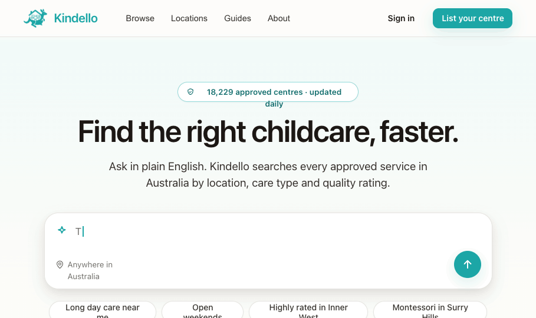
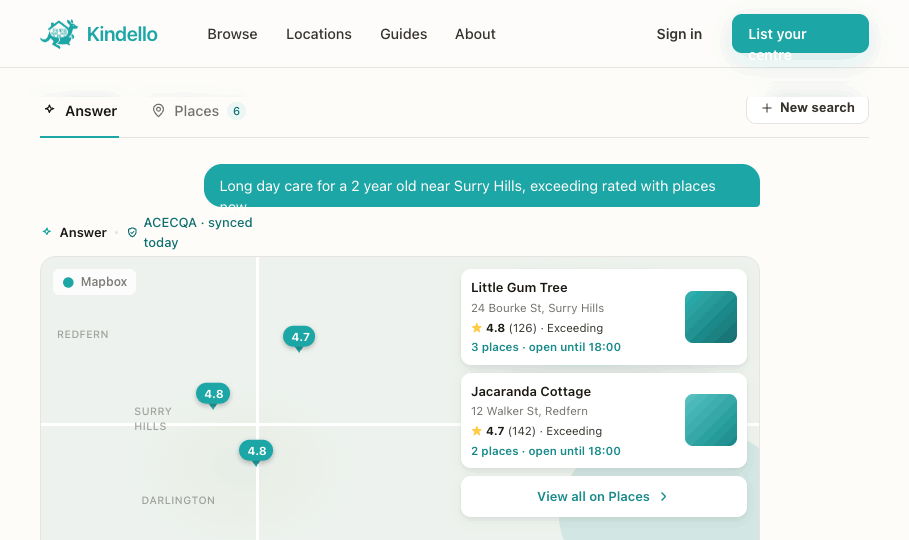
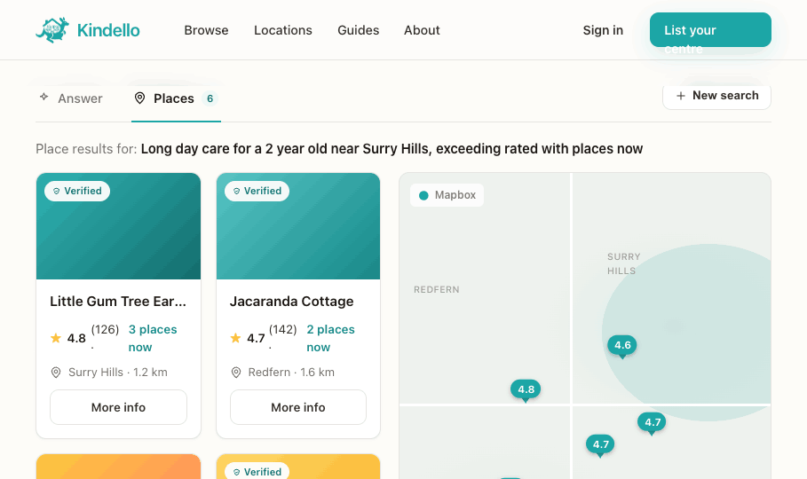
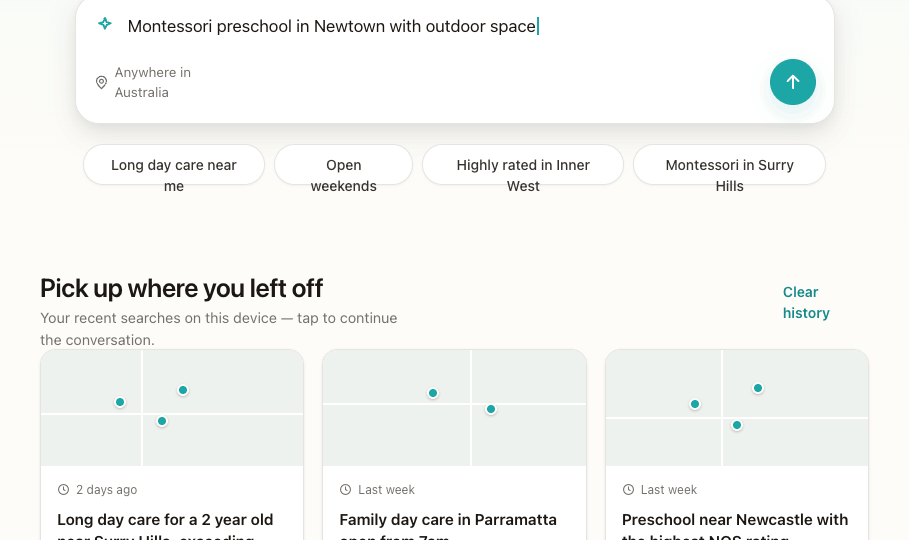

How the Kindello homepage behaves once a parent asks a question. As lead designer my recommendation is a focused takeover with persistent chrome: the marketing hero + directory sections give way to the conversation, but the homepage header (logo + nav + Sign in) stays so parents keep context and can navigate out. One left-aligned Answer ⇄ Places toggle owns the whole conversation.
Recommended direction — frames 2 & 3Resting state. Hero chat box is the focal point, with a typewriter placeholder cycling real AU queries, suggestion chips, then featured listings & browse sections below.

On submit the hero collapses into a conversation. Query as a chat bubble; synthesised answer over real ACECQA data, inline map preview, follow-ups and a pinned composer. Header stays.

Same conversation, toggle flipped. The last query's results plotted on a map beside larger place cards — a browse view, no composer or follow-ups.

Resting state for someone who's searched before. Below the hero, a "Pick up where you left off" section lists recent threads as cards (mini-map, query, result count, recency) — directory-native, no SaaS sidebar. Anonymous = this device; signed-in = full history.
